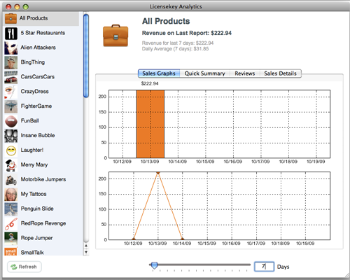
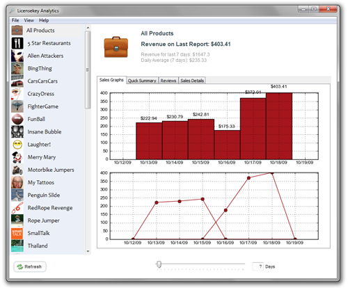

AppSalesGraph is an open source GPL tool written in python to help you track the sales of your apps in the app store.
It's totally free and totally open source, so download it, use it and improve it.
It works on both windows and mac. Get it from GitHub. Requests? Complaints? Send me a message on twitter.


Features I want
- Reordering items by the number of sales
- Showing a little chart icon showing if an icon is going up or down in charts
- Geography information
- Reviews from all countries in the world, not just U.S
- Ranking information download
- Using weekly reports to fill in the gaps
- Ability to mark 'events' (partly done)